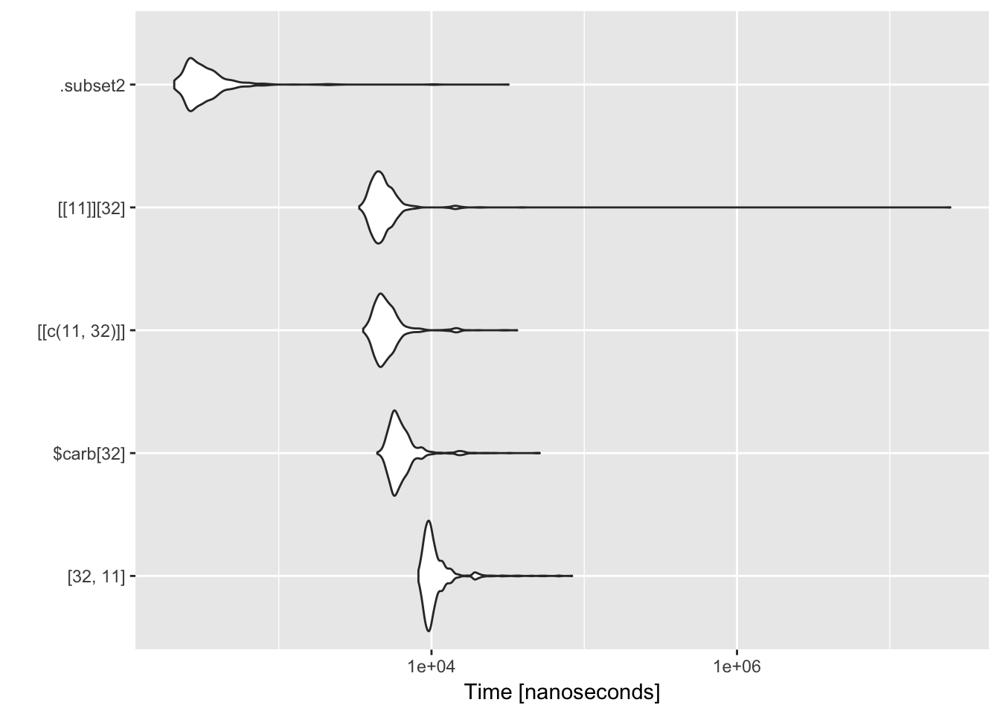

Chapter 4 Optimization
In this Chapter, we will see how to measure and improve code performance.
4.1 Measuring performance
4.1.1 Benchmarking
Reading: http://adv-r.had.co.nz/Performance.html#microbenchmarking
There are several ways to benchmark code (see http://www.alexejgossmann.com/benchmarking_r/) from system.time to dedicated packages such as rbenchmark (Kusnierczyk (2012)) or microbenchmark (Mersmann (2015)).
Let’s start with an example from Wickham (2014).
library(microbenchmark)
m <- microbenchmark(
times = 1000, # default is 100
"[32, 11]" = mtcars[32, 11],
"$carb[32]" = mtcars$carb[32],
"[[c(11, 32)]]" = mtcars[[c(11, 32)]],
"[[11]][32]" = mtcars[[11]][32],
".subset2" = .subset2(mtcars, 11)[32]
)
m## Unit: nanoseconds
## expr min lq mean median uq max neval
## [32, 11] 8405 9531.5 10669.669 10069.5 11210.0 66007 1000
## $carb[32] 4519 5583.0 6420.826 6118.5 6697.0 41524 1000
## [[c(11, 32)]] 3609 4558.0 5217.720 5082.0 5679.5 37131 1000
## [[11]][32] 3435 4262.0 31598.453 4732.0 5419.5 26656862 1000
## .subset2 206 258.0 350.518 286.0 351.0 2371 1000ggplot2::autoplot(m)
4.1.2 Profiling and optimization
Reading: http://adv-r.had.co.nz/Profiling.html#measure-perf
Let’s compare three ways of estimating a linear regression: with built-in lm and with two functions we defined in package Linreg in Chapter 3.
data(cats, package = "MASS")
fit1 <- lm(Hwt ~ Bwt, data = cats)
fit2 <- linmod(Hwt ~ Bwt, data = cats)
fit3 <- linmodEst(cbind(1, cats$Bwt), cats$Hwt)
all.equal(round(coef(fit1), 5), round(coef(fit2), 5))## [1] TRUEall.equal(round(coef(fit1), 5), round(fit3$coefficients, 5), check.names = FALSE)## [1] TRUEm <- microbenchmark(
fit1 <- lm(Hwt ~ Bwt, data = cats),
fit2 <- linmod(Hwt ~ Bwt, data = cats),
fit3 <- linmodEst(cbind(1, cats$Bwt), cats$Hwt)
# custom checks can be performed with the 'check' argument
)
m## Unit: microseconds
## expr min lq mean
## fit1 <- lm(Hwt ~ Bwt, data = cats) 645.615 661.3840 765.9811
## fit2 <- linmod(Hwt ~ Bwt, data = cats) 538.402 554.6035 593.0444
## fit3 <- linmodEst(cbind(1, cats$Bwt), cats$Hwt) 97.385 107.6065 131.5962
## median uq max neval
## 672.5185 690.5385 9224.218 100
## 561.8630 576.5045 1964.201 100
## 116.8665 123.5560 1427.398 100ggplot2::autoplot(m)
4.2 Improving performance
Use different tools (as in Chapter 6)
Vectorize
Parallelize
Use a faster language (C/C++, Fortran, )
4.2.1 Introduction to C/C++
Reading:
4.2.2 Rcpp
Reading: http://adv-r.had.co.nz/Rcpp.html
References
Kusnierczyk, W. 2012. Rbenchmark: Benchmarking Routine for R. https://CRAN.R-project.org/package=rbenchmark.
Mersmann, Olaf. 2015. Microbenchmark: Accurate Timing Functions. https://CRAN.R-project.org/package=microbenchmark.
Wickham, H. 2014. Advanced R. Chapman & Hall/Crc the R Series. Taylor & Francis. https://books.google.com/books?id=PFHFNAEACAAJ.